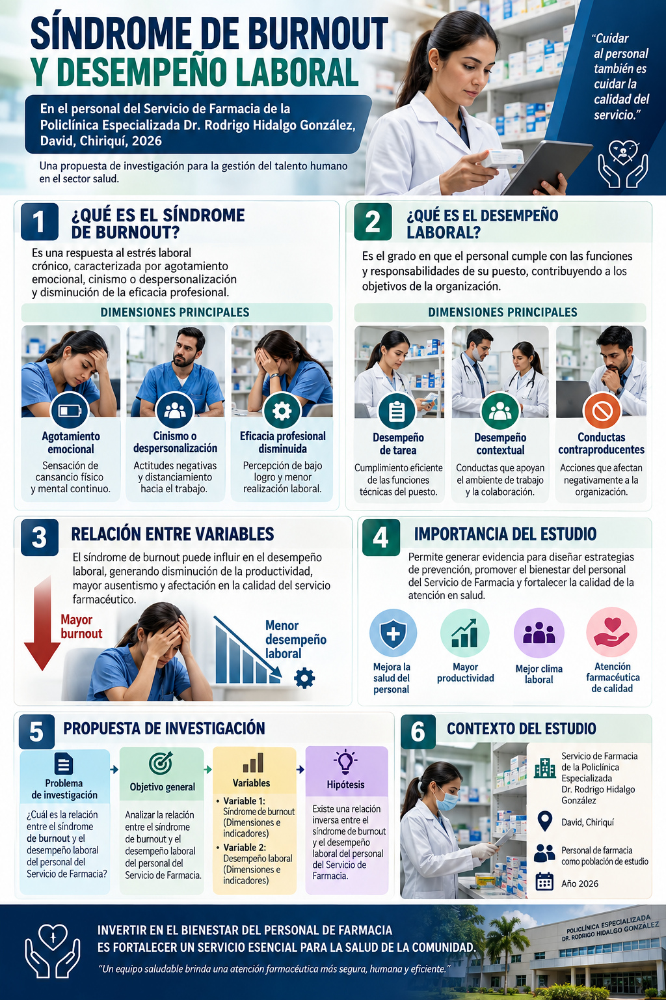

Punto de partida
Una investigación coherente comienza con una pregunta delimitada.

¿Qué vamos a investigar?
Título: Síndrome de burnout y su relación con el desempeño laboral del personal del Servicio de Farmacia de la Policlínica Especializada Dr. Rodrigo Hidalgo González de la Caja de Seguro Social, David, Chiriquí, 2026.
Campo: Gestión de Recursos Humanos y bienestar ocupacional.
Alcance de esta actividad: propuesta conceptual interactiva; no presenta datos de campo ni resultados propios.
Pregunta rectora
¿Qué relación existe entre el síndrome de burnout y el desempeño laboral del personal del Servicio de Farmacia de la Policlínica Especializada Dr. Rodrigo Hidalgo González de la Caja de Seguro Social, David, Chiriquí, durante 2026?
Mapa del recorrido científico
La contrastación empírica sería una fase posterior; aquí no se presentan resultados del personal.
Características de la investigación
Tres principios orientan todas las decisiones metodológicas.
Sistemática y planificada
El problema, el objetivo, las variables y la hipótesis siguen una secuencia lógica, con la misma población y delimitación temporal.
Empírica y verificable
Las variables requieren indicadores e instrumentos definidos antes de recolectar datos. La hipótesis se contrastaría con evidencia del personal participante.
Objetiva y analítica
Se aplican definiciones explícitas y procedimientos consistentes. Una asociación observada no autoriza afirmar causalidad.
Problema de investigación
Contextualizar no significa anticipar resultados.
Situación problemática
El Parcial 1 cita información institucional según la cual la dispensación de medicamentos pasó de 15 424 en noviembre a 16 667 en diciembre de 2025 (Caja de Seguro Social [CSS], 2026), un incremento aproximado del 8 %. Este volumen de actividad constituye un antecedente contextual, no una medición de agotamiento ni de desempeño.
La literatura internacional identifica asociaciones entre dimensiones del burnout y desempeño laboral (Corbeanu et al., 2023), y un estudio panameño examinó ambas variables en servidores judiciales (Good González y Ronquillo Horsten, 2024). Estos hallazgos no se pueden extrapolar automáticamente al personal farmacéutico de esta policlínica.
Vacío delimitado en el Parcial 1: en el material revisado para aquella ficha no se identificó evidencia específica de esta relación en el servicio seleccionado. Esto no equivale a demostrar que no existan estudios adicionales.
Caso interactivo · ¿Qué puede concluirse?
Objetivo general
La acción investigativa debe responder directamente a la pregunta.
OBJETIVO GENERAL
Determinar la relación entre el síndrome de burnout y el desempeño laboral del personal del Servicio de Farmacia de la Policlínica Especializada Dr. Rodrigo Hidalgo González de la Caja de Seguro Social, David, Chiriquí, durante 2026.
Verbo
Determinar: establece el propósito de examinar una relación, no de intervenir ni de demostrar una causa.
Delimitación
Dos variables, una población profesional concreta, una institución y un periodo definidos.
Variables y operacionalización
Los conceptos deben traducirse en dimensiones observables sin inventar mediciones.
Síndrome de burnout
Respuesta prolongada a estresores laborales crónicos, conceptualizada mediante agotamiento, cinismo o despersonalización e ineficacia profesional (Maslach et al., 2001).
- Agotamiento
- Cinismo o despersonalización
- Ineficacia profesional / menor realización
Desempeño laboral
Conductas y acciones vinculadas con los objetivos organizacionales, que incluyen desempeño de tarea, desempeño contextual y conductas contraproducentes (Koopmans et al., 2014).
- Desempeño de tarea
- Desempeño contextual
- Conductas contraproducentes
Matriz preliminar de operacionalización
| Variable | Dimensiones propuestas | Indicadores orientativos | Precaución |
|---|---|---|---|
| Burnout | Agotamiento; cinismo/despersonalización; eficacia profesional | Puntuaciones por dimensión de un instrumento apropiado | Elegir versión, licencia, adaptación y puntos de interpretación antes de aplicar |
| Desempeño laboral | Tarea; contextual; contraproducente | Puntuaciones por dimensión de una escala validada para el contexto | Examinar pertinencia cultural y del puesto; proteger la confidencialidad |
Esta matriz es una propuesta de profundización del Parcial 2, no un procedimiento ya ejecutado ni un instrumento validado para esta policlínica.
Infografía: dimensiones conceptuales
Esquema conceptual basado en Maslach et al. (2001) y Koopmans et al. (2014). No son resultados del estudio.
Laboratorio interactivo · Relaciona cada indicador
Selecciona la dimensión conceptual correspondiente a cada ejemplo hipotético. No se describen trabajadores reales.
Hipótesis y congruencia"src="congruencia_metodológica.jpg_metodológica.jpg
La hipótesis expresa una relación esperada, no un hallazgo.
Existe una relación inversa y estadísticamente significativa entre el síndrome de burnout y el desempeño laboral del personal del Servicio de Farmacia de la policlínica seleccionada durante 2026: a mayores niveles de burnout, se espera un desempeño laboral menos favorable.
No existe una relación estadísticamente significativa entre el síndrome de burnout y el desempeño laboral del personal del Servicio de Farmacia de la policlínica seleccionada durante 2026.
Matriz de src="congruencia_metodológica.jpg
| Problema | Objetivo | Variables | Hipótesis |
|---|---|---|---|
| ¿Qué relación existe entre burnout y desempeño laboral en esta población durante 2026? | Determinar esa relación. | Burnout ↔ desempeño laboral. | Se espera asociación inversa; debe contrastarse con datos. |
Diseño compatible sugerido: enfoque cuantitativo, alcance correlacional y diseño no experimental, si posteriormente se ejecuta el estudio. La ficha anterior no demuestra que el trabajo de campo se haya realizado.
Diagrama de la hipótesis relacional
Hipótesis: se espera una relación inversa. La dirección y significación deben evaluarse con datos; una correlación no demuestra causalidad.
Fundamentación con autores
Cuatro aportes científicos y un antecedente institucional.
Maslach, Schaufeli y Leiter (2001)
Definen el burnout desde el agotamiento, el cinismo y la ineficacia profesional. Fundamentan la primera variable.
Consultar publicación ↗Koopmans y colaboradores (2014)
Examinan la validez del Cuestionario de Desempeño Laboral Individual y fundamentan una aproximación multidimensional al desempeño.
Consultar publicación ↗Corbeanu y colaboradores (2023)
Metaanálisis de 45 estudios sobre la asociación entre burnout y desempeño; respalda la pertinencia de una hipótesis relacional, no causal.
Consultar publicación ↗Good González y Ronquillo Horsten (2024)
Antecedente panameño en servidores judiciales; aporta contexto nacional, sin permitir generalizar resultados al servicio farmacéutico.
Consultar publicación ↗Reflexión final
La coherencia conceptual es una condición para producir conocimiento responsable.
Reflexión crítica
Investigar no consiste en reunir conceptos aislados, sino en construir un sistema de decisiones intelectualmente consistente. El problema delimita una necesidad de conocimiento; el objetivo traduce esa necesidad en una acción investigativa; las variables hacen explícitos los fenómenos que deben definirse y medirse; la hipótesis propone una relación contrastable; y la fundamentación teórica sitúa la propuesta dentro del conocimiento disponible.
En el contexto del Servicio de Farmacia estudiado, esta articulación adquiere una responsabilidad adicional: el volumen de trabajo no autoriza a diagnosticar burnout ni a calificar negativamente el desempeño de sus colaboradores. Formular la investigación con prudencia protege a las personas y evita convertir suposiciones en conclusiones. Asimismo, una correlación eventual no demostraría por sí sola una relación de causa y efecto.
Desde la gestión de Recursos Humanos, el valor de esta propuesta reside en establecer condiciones para generar evidencia contextualizada que, si se obtiene de manera ética y rigurosa, podría orientar decisiones de bienestar ocupacional y mejora organizacional. La calidad de una investigación se reconoce tanto por la claridad de lo que pretende conocer como por la disciplina con que reconoce aquello que todavía no puede afirmar.
Referencias y entrega
Fuentes originales, comprobación final y publicación pública.
Referencias bibliográficas · APA 7.ª edición
Caja de Seguro Social. (2026, 28 de enero). Más atención y mejor servicio en la nueva policlínica de David. https://prensa.css.gob.pa/2026/01/28/mas-atencion-y-mejor-servicio-en-la-nueva-policlinica-de-david/
Corbeanu, A., Iliescu, D., Ion, A., & Spînu, R. (2023). The link between burnout and job performance: A meta-analysis. European Journal of Work and Organizational Psychology, 32(4), 599–616. https://doi.org/10.1080/1359432X.2023.2209320
Good González, I. B., & Ronquillo Horsten, J. L. (2024). Burnout y su relación con el desempeño laboral en servidores judiciales del Sistema Penal Panamá. Revista Scientific, 9(33), 319–340. https://doi.org/10.29394/Scientific.issn.2542-2987.2024.9.33.15.319-340
Koopmans, L., Bernaards, C. M., Hildebrandt, V. H., de Vet, H. C. W., & van der Beek, A. J. (2014). Construct validity of the Individual Work Performance Questionnaire. Journal of Occupational and Environmental Medicine, 56(3), 331–337. https://doi.org/10.1097/JOM.0000000000000113
Maslach, C., Schaufeli, W. B., & Leiter, M. P. (2001). Job burnout. Annual Review of Psychology, 52, 397–422. https://doi.org/10.1146/annurev.psych.52.1.397
Los contenidos, diagramas e ilustraciones de esta actividad están en español; los títulos de publicaciones se conservan en su idioma original, conforme a APA 7.
Presentación web educativa con párrafos justificados. Las referencias siguen la disposición de APA 7; el documento PDF complementario emplea márgenes, doble espacio y sangría de primera línea propios de un manuscrito académico.
Lista de verificación de entrega
Importante: abrir el HTML en tu computadora no equivale a publicarlo. Debes alojarlo y verificar su URL pública.